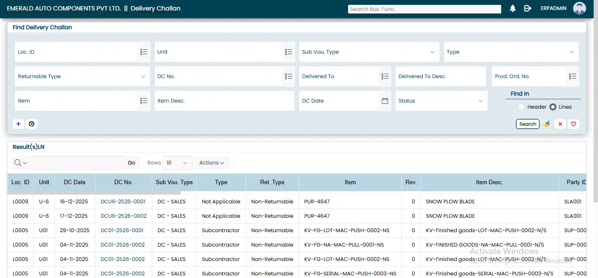
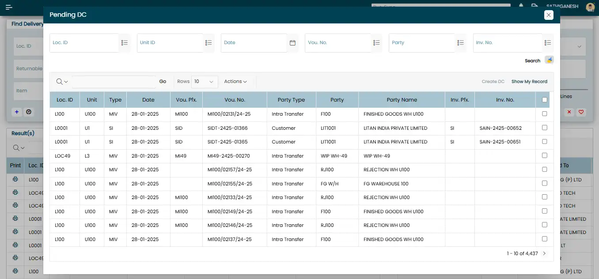
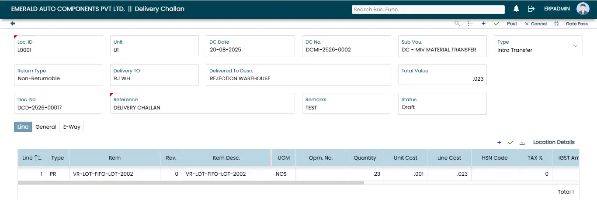
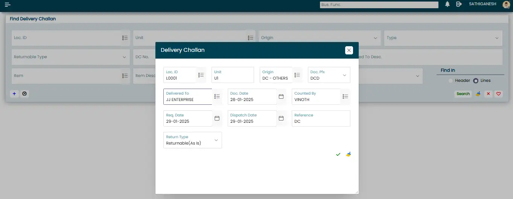
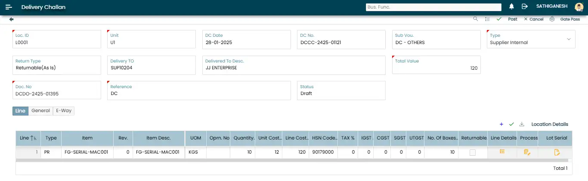
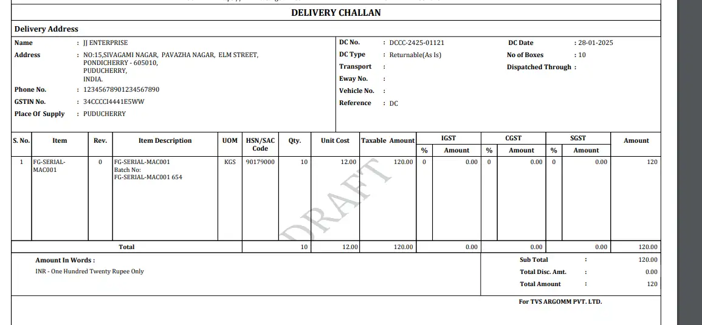

<div data-category="Gate Entry" data-title="Delivery Challan" data-updated="January 23, 2026" data-contributors="RoadmapIT" data-breadcrumb="Home,Gate Entry,Delivery Challan">
  <div class="page-content">
    <h5>Delivery Challan</h5>
    <p>A delivery challan is a delivery or dispatch note, to record the details of goods being shipped or delivered from a seller to a buyer or from one location to another within an organization. It serves as proof of the delivery and outlines the specifics of the goods being transported.</p>

    <h5>Navigation path:</h5>
    <p class="fs-6">Supply Chain Management \ Gate Entry \ Transaction \ Delivery Challan</p>

    
    <ul style="list-style-type: none; align-content: center">
      <li class="mouse-icon">Search screen displays the list of Delivery Challan with the relevant details and its status</li>
      <li class="mouse-icon">Click on Search to filter all the records.</li>
      <li class="mouse-icon">User can filter the respective documents by entering the search parameters at the header.</li>
      <li class="mouse-icon">Using search, system displays the results relevant to the search parameters entered.</li>
      <li class="mouse-icon">On-click; the corresponding transaction record will be displayed.</li>
      <li class="mouse-icon">
        Using
        
        icon, entered search parameters can be cleared.
      </li>
      <li class="mouse-icon">
        To close the screen, use
        <i class="bi bi-x fs-4 mx-2 text-danger"></i>
        icon
      </li>
      <li class="mouse-icon">
        Click on
        <i class="bi bi-speedometer2 fs-4 mx-2 text-muted"></i>
        create DC button, all the pending documents for which the DC must be created are displayed
      </li>
    </ul>

    
    <ul style="list-style-type: none; align-content: center">
      <li class="mouse-icon">Search screen displays the list of Pending documents to create DC with the relevant details and its status</li>
      <li class="mouse-icon">Click on search to filter all the records.</li>
      <li class="mouse-icon">User can filter the respective documents by entering the search parameters at the header.</li>
      <li class="mouse-icon">Using search, system displays the results relevant to the search parameters entered.</li>
      <li class="mouse-icon">
        Using
        
        icon, entered search parameters can be cleared.
      </li>
      <li class="mouse-icon">
        To close the screen, use
        <i class="bi bi-x fs-4 mx-2 text-danger"></i>
        icon
      </li>
      <li class="mouse-icon">Select the Flag and click Create DC doc. button.</li>
      <li class="mouse-icon">The DC will be created with the status new.</li>
    </ul>

    
    <ul style="list-style-type: none; align-content: center">
      <li class="mouse-icon">
        By Clicking the
        <i class="bi bi-plus fs-4 mx-2 text-primary"></i>
        Add button in the find screen, we can create new Delivery Challan (DC) by entering all the mandatory fields displayed in the Add dialog
      </li>
    </ul>

    
    <ul style="list-style-type: none; align-content: center">
      <li class="mouse-icon">Default Loc ID. & Unit is auto populated</li>
      <li class="mouse-icon">Select the Origin from LOV</li>
      <li class="mouse-icon">Select the Doc. Pfx.</li>
      <li class="mouse-icon">Select/Enter the Delivered To.</li>
      <li class="mouse-icon">Doc. Date is updated by default</li>
      <li class="mouse-icon">Select the Counted By</li>
      <li class="mouse-icon">Select the Req. Date and Desp. Date</li>
      <li class="mouse-icon">Enter the Reference.</li>
      <li class="mouse-icon">Select the Return Type</li>
    </ul>

    
    <ul style="list-style-type: none; align-content: center">
      <li class="mouse-icon">
        Click
        <i class="bi bi-plus fs-4 mx-2 text-primary"></i>
        Add button to create the line item
      </li>
      <li class="mouse-icon">Enter/Select the Item.</li>
      <li class="mouse-icon">Enter the quantity.</li>
      <li class="mouse-icon">Enter the Unit Cost</li>
      <li class="mouse-icon">Select the HSN Code</li>
      <li class="mouse-icon">Check the Returnable flag if needed</li>
      <li class="mouse-icon">On clicking post button, document is sent for approval.</li>
      <li class="mouse-icon">Press the Cancel button to cancel the record.</li>
      <li class="mouse-icon">
        The printed format of DC can be viewed using the
        <i class="bi bi-printer fs-5 mx-2 text-warning"></i>
        print button.
      </li>
    </ul>

    
  </div>
</div>
